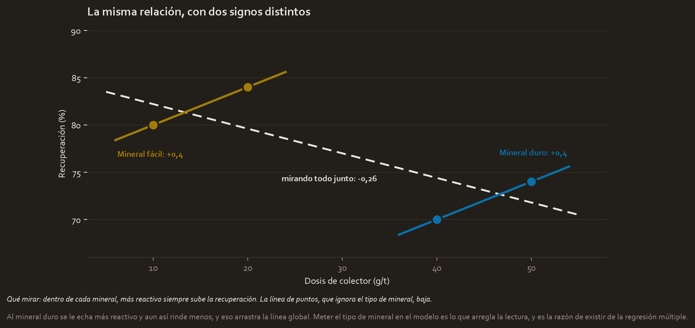

What this module solves
The line of module 2 assumes the recovery depends only on the dose. At a plant that is false: it also depends on the pH, on the grind size, on the type of ore that came in that week and on the water temperature.
Putting all of that into the model is not a luxury, it is a necessity, and for a reason this module demonstrates with four numbers: ignoring a variable that matters does not give you a less precise answer, it can give you the answer with the sign flipped.
Before the theory: a toy example
Four flotation tests, two with easy ore and two with hard ore. Since the hard ore is more work, the operator gives it more collector:
| Test | Ore type | Dose (g/t) | Recovery (%) |
|---|---|---|---|
| 1 | Easy | 10 | 80 |
| 2 | Easy | 20 | 84 |
| 3 | Hard | 40 | 70 |
| 4 | Hard | 50 | 74 |
Step 1. Look only at the dose, as in module 2
We do what the previous module did and calculate the slope ignoring the ore column. The mean of the dose is 30 and that of the recovery 77:
| Test | Distance to 30 | Distance to 77 | Product |
|---|---|---|---|
| 1 | −20 | +3 | −60 |
| 2 | −10 | +7 | −70 |
| 3 | +10 | −7 | −70 |
| 4 | +20 | −3 | −60 |
suma de los productos = −260
suma de las distancias de la dosis al cuadrado = 400 + 100 + 100 + 400 = 1000
pendiente = −260 / 1000 = −0,26It comes out negative. Read as is: every gram per tonne of collector lowers the recovery by 0.26 points. If you trust that number, you recommend lowering the dose.
Step 2. Look inside each ore
Now the same four tests, but without mixing the two ores:
mineral fácil: de 10 a 20 g/t, la recuperación pasa de 80 a 84
(84 − 80) / (20 − 10) = 4 / 10 = +0,4
mineral duro: de 40 a 50 g/t, la recuperación pasa de 70 a 74
(74 − 70) / (50 − 40) = 4 / 10 = +0,4Within each ore the slope is +0.4, the same as in the previous modules, and it is positive in both cases. More collector always improves the recovery.

Step 3. Why the overall one comes out backwards
Because the ore type does two things at once: it worsens the recovery on its own, and it comes with more dose, because the operator compensates. When looking only at the dose, the penalty of the hard ore gets attributed to the dose, which is the only variable we are looking at.
This has a name of its own, Simpson's paradox, and it is not a laboratory curiosity: it is what happens every time a plant is analysed without separating by campaign, by shift or by feed ore.
Step 4. Put in the variable that was missing
The solution is to add the ore type to the model. Since it is not a number, it is coded with a 1 and a 0: 1 if the ore is hard, 0 if it is easy. The model now has two variables:
recuperación = intercepto + a × dosis + b × (1 si es duro)And with this data it comes out exact, with no residuals, because there are four points and three things to estimate. It is solved by looking at each group:
mineral fácil (duro = 0): 80 = intercepto + a × 10 y la pendiente ya la sabemos: a = 0,4
80 = intercepto + 4 → intercepto = 76
mineral duro (duro = 1): 70 = 76 + 0,4 × 40 + b
70 = 76 + 16 + b = 92 + b → b = −22The complete model is: recovery = 76 + 0.4 × dose − 22 × (hard).
Step 5. Read the two coefficients
And here is the central idea of the module, which is how a coefficient is read when there are several:
- +0.4 per gram per tonne, holding the ore type constant. That is, comparing two tests of the same ore, the one carrying one more gram of collector recovers 0.4 points more.
- −22 points for being hard ore, holding the dose constant. Comparing two tests with the same dose, the hard-ore one recovers 22 points less.
That tag, "holding everything else constant", is not an ornament: it is what the number means. And it is what fixes the paradox of step 1, because now the dose no longer carries the blame for the ore.
Glossary
- Multiple linear regression. The same method of module 2 with more than one independent variable. It is no longer a line but a plane, or something with more dimensions that nobody draws.
- Coefficient. The number that multiplies each variable. It is always read as "how much Y changes per unit of this X, holding the others constant".
- Confounding variable. A third variable that affects X and Y at the same time, and that distorts the relationship between them if it is not included. The ore type of the example.
- Simpson's paradox. The extreme case of the above: the relationship changes sign when separating by groups.
- Dummy variable. The column of ones and zeros with which a category goes into the model.
- One-hot encoding. Turning a category with several levels into several columns of ones and zeros, one per level minus one.
- Reference category. The level left without a column and against which all the others are compared. In the example, the easy ore.
- Multicollinearity. That two or more independent variables say almost the same thing. The coefficients become unstable and can no longer be interpreted separately.
- Variance inflation factor. The number that measures that multicollinearity, one per variable. VIF for short.
- Overfitting. A model that learns the noise of your data and fails with new data.
- Underfitting. The opposite: a model too simple to capture even what is there.
- Adjusted R². The R² with a penalty for each variable added. It is the one to look at when there is more than one.
- Regularisation. A family of methods that curb overfitting by punishing large coefficients: Ridge, Lasso and Elastic Net.
Step by step
Step 1. Choose which variables go in
Not everything there is goes in. What goes in is whatever has a reason to influence Y, and very particularly any variable that affects both Y and the X variables you care about, because that is exactly the one that produces the paradox of the example.
The useful question is not "do I have this column?" but "could this variable be distorting the one I want to measure?".
Step 2. Turn the categories into numbers
A model does not know how to multiply by "hard". You have to encode, and the correct way is one column of ones and zeros for each category minus one:
| Ore type | hard? | mixed? |
|---|---|---|
| Easy | 0 | 0 |
| Hard | 1 | 0 |
| Mixed | 0 | 1 |
The level left without a column, the easy one, is the reference: the intercept belongs to it, and the other coefficients are read as differences against it.
Why one column fewer? Because the information is already complete: if it is not hard and it is not mixed, it is easy by elimination. Putting in the third column too creates a perfect redundancy and the model stops having a unique solution.
And what is never done: coding as 1, 2, 3. That tells the model that "mixed" is triple "easy" and that the distance between easy and hard is the same as between hard and mixed, which are claims nobody has made.
Step 3. Check the assumptions, which are now five
The four of module 2 still hold just the same: linearity, independence, normality of the residuals and constant variance. One new one gets added, specific to having several variables:
No multicollinearity. That the independent variables do not explain one another. If you put in the dose in grams per tonne and also in kilos per tonne, the model cannot know which one to attribute the effect to, and it splits it at random between the two.
It is measured with the VIF, one per variable:
VIF = 1 / (1 − R² de esa variable explicada por las demás)| R² of that variable against the others | VIF | Reading |
|---|---|---|
| 0 | 1 | Independent of the rest |
| 0.5 | 2 | Relaxed |
| 0.8 | 5 | Starting to bother |
| 0.9 | 10 | Usual threshold for acting |
The classic symptom, even before calculating anything: the whole model predicts very well but no coefficient comes out significant on its own. That is multicollinearity almost for sure. The solution is usually to remove one of the redundant variables or combine them into one.
Step 4. Interpret the coefficients without slipping
Three rules, and the first one already came up in the example:
- "Holding everything else constant" is part of the meaning, not an optional tag.
- Coefficients are not compared with each other raw, because each is in its own units. A coefficient of 0.4 per gram per tonne and another of −22 per ore type cannot be ranked by size just like that.
- A dummy variable's coefficient is a difference against the reference, not a level. The −22 does not say the hard ore recovers 22; it says it recovers 22 less than the easy one at equal dose.
Step 5. Watch for overfitting, and stop looking at the R²
Every variable you add raises the R². Always, even if the variable is pure noise. It is a mathematical property, not a sign that the model has improved.
That is why, as soon as there is more than one variable, the number to look at is the adjusted R², which deducts a penalty for each variable:
R² ajustado = 1 − (1 − R²) × (n − 1) / (n − k − 1)where n is the observations and k the variables. What matters is how it behaves: if the new variable contributes, the adjusted one rises; if it only contributes noise, the adjusted one falls even though the R² has risen. In the code below you see exactly that.
And the underlying problem has two faces:
| What happens | How it shows | |
|---|---|---|
| Underfitting | The model is too simple for the phenomenon | It fails equally badly with your data and with new data |
| Overfitting | The model learned the noise of your data | Perfect with yours, bad with new data |
Overfitting is the dangerous one because it disguises itself as success. An R² of 0.99 with twenty variables and thirty observations is not a good model, it is a model that memorised.
Step 6. The three tools against overfitting
The syllabus names them, and it is worth knowing what each one is for even though the course does not use them in depth:
| Method | What it does | When it is used |
|---|---|---|
| Ridge | Shrinks all the coefficients towards zero without ever zeroing them | When there is multicollinearity and you want to keep every variable |
| Lasso | Shrinks and besides sets to zero the ones that do not contribute | When you want the method itself to select variables |
| Elastic Net | A mix of the two, with a knob that grades the proportion | Many variables and correlated with each other |
All three are the same idea: penalising large coefficients so the model does not contort itself chasing every point. It is paid for with a little bias and buys stability.
The code, in parts
Step 1. Reproduce the paradox
First the mistake, to see it with your own eyes: fitting the line ignoring the ore type.
import numpy as np
from scipy import stats
dose = np.array([10, 20, 40, 50])
recovery = np.array([80, 84, 70, 74])
hard = np.array([0, 0, 1, 1]) # 1 = mineral duro, 0 = mineral facil
blind = stats.linregress(dose, recovery)
print(f"pendiente ignorando el tipo de mineral = {blind.slope}")hard = np.array([0, 0, 1, 1])- The dummy variable: a 1 where the ore is hard and a 0 where it is easy. It is all that is needed to put a two-level category into a model.
blind- The name says what it is: the blind fit, the one that does not see the ore type. Giving names that say something saves half the comments.
pendiente ignorando el tipo de mineral = -0.26
The same −0.26 as on paper, and with the wrong sign relative to what really happens.
Step 2. Fit the model with the two variables
linregress only admits one independent variable, so here it ends. For several, the design matrix is assembled: one column per variable, plus a column of ones for the intercept.
X = np.column_stack([np.ones(len(dose)), dose, hard])
coefficients, *_ = np.linalg.lstsq(X, recovery, rcond=None)
print(f"intercepto = {coefficients[0]:.1f}")
print(f"dosis = {coefficients[1]:+.1f}")
print(f"mineral duro = {coefficients[2]:+.1f}")np.column_stack([...])- Glues several vectors together as columns of a table. The result has four rows, one per test, and three columns.
np.ones(len(dose))- A column of ones. It is the standard trick so that the intercept comes out as one more coefficient: multiplied always by 1, it acts as the independent term.
np.linalg.lstsq(...)- Short for least squares. It solves exactly the same problem as module 2, minimising the sum of squared residuals, but with several variables at once.
coefficients, *_lstsqreturns four things. The asterisk with an underscore means "and everything else, which I do not care about". Without it, Python complains about receiving more values than there are names.rcond=None- An internal setting of numerical precision. If it is not passed, numpy prints a warning that the default is going to change. It is put in so the code runs clean.
{coefficients[1]:+.1f}- The
+in the format forces the sign to be printed even when it is positive. With coefficients, seeing the sign written avoids slips.
intercepto = 76.0 dosis = +0.4 mineral duro = -22.0
The three numbers we solved for by hand. The dose got its positive sign back as soon as the model could attribute to the ore what belonged to the ore.
Step 3. Check that the fit is exact
predicted = X @ coefficients
print(f"predichos = {np.round(predicted, 6)}")
print(f"R2 = {1 - ((recovery - predicted) ** 2).sum() / ((recovery - recovery.mean()) ** 2).sum():.4f}")X @ coefficients- The at sign is matrix multiplication. It multiplies each row of the table by the coefficients and adds them up, which is exactly what the model does to predict.
np.round(predicted, 6)- Rounds to six decimals. It is needed because the calculation leaves minuscule remainders, of the order of 0.00000000000001, and without rounding the output fills with scientific notation that means nothing.
1 - suma_residuos / suma_total- The R² of module 2, written in one line. It compares the error of the model against the error of always predicting the mean.
predichos = [80. 84. 70. 74.] R2 = 1.0000
R² of 1, a perfect fit, and that is not good news: there are four observations and three things to estimate. With so little data, a model can pass exactly through every point without having learned anything. It is textbook overfitting, and it serves as a warning.
Step 4. Watch the adjusted R² do its job
A case with twenty observations. To the three-variable model a fourth is added that barely contributes: the R² rises from 0.800 to 0.805.
n, r2_three, r2_four = 20, 0.800, 0.805
for k, r2 in [(3, r2_three), (4, r2_four)]:
adjusted = 1 - (1 - r2) * (n - 1) / (n - k - 1)
print(f"{k} variables: R2 = {r2:.3f} R2 ajustado = {adjusted:.4f}")for k, r2 in [(3, ...), (4, ...)]:- A loop over a list of pairs. On each pass,
ktakes the first value of the pair andr2the second, so the same calculation is done twice without writing it twice. (n - k - 1)- The degrees of freedom that remain: the observations minus the variables minus the intercept. The more variables you put in, the smaller this number and the harsher the penalty.
3 variables: R2 = 0.800 R2 ajustado = 0.7625 4 variables: R2 = 0.805 R2 ajustado = 0.7530
There is the whole lesson of step 5: the R² rises and the adjusted one falls. The new variable contributed less than it costs, and the plain R² had no way of telling you.
Watch out
- **Ignoring a variable that matters does not reduce the precision, it changes the conclusion.** The example goes from −0.26 to +0.4, and with it the recommendation is inverted.
- A coefficient without "holding everything else constant" is misinterpreted. That sentence is part of its definition, not a nuance.
- Never code categories as 1, 2, 3. That imposes on the model an order and distances that do not exist. One column of ones and zeros per level minus one.
- The R² always rises when adding variables, even if they are noise. With more than one variable, the number to look at is the adjusted one.
- A perfect R² with little data is suspicious, not good. With four points and three parameters, the exact fit is guaranteed and proves nothing.
- Variables that say the same thing break the individual interpretation. The model can predict well and still split the effect at random between them.
- If the model is significant but no coefficient is, suspect multicollinearity. It is the most characteristic symptom.
- Putting variables in because they are available is the direct route to overfitting. Every variable has to have a reason to be there.
Metallurgical bridge
The recovery never depended only on the reagent, and you have known that since your first day at the plant. It depends on the pH, on the grind size, on the residence time, on the mineralogy of the feed and on the water quality.
What this module does is put into numbers something that at the plant is done with a strict working rule: a comparative test is only valid if everything else stayed the same. If you change the collector and at the same time a campaign of different ore comes in, the test is worthless, and nobody argues that in a meeting room.
Well, "holding everything else constant" is exactly that rule, written as a coefficient. The difference is that in the laboratory you get it by controlling the conditions, and in the model you get it by measuring the variables and putting them inside.
| At the plant | In the model |
|---|---|
| A test with everything equal except one variable | A coefficient with the others constant |
| The feed ore changed halfway through the campaign | A confounding variable not included |
| Comparing two reagents tested in different campaigns | The paradox of step 1 |
| Two sensors measuring almost the same thing at the same point | Multicollinearity |
| Fitting a plant model to a single good campaign | Overfitting |
And the paradox row is the one that costs the most. Comparing reagent A, tested in summer with oxidised ore, against reagent B, tested in winter with fresh ore, and concluding which is better, is exactly the −0.26 of step 1: a conclusion with the sign flipped, backed by impeccable arithmetic.
Review
What is Simpson's paradox and what produces it?
It is the relationship between two variables changing sign when the data is separated into groups. In the example, looking at the four tests together the dose seems to lower the recovery, with a slope of −0.26, while within each ore type it raises it, with a slope of +0.4 in both. It is produced by a confounding variable that affects both the result and the variable being measured: here the hard ore recovers less on its own and besides receives more dose, so the ore's penalty gets attributed to the reagent. The solution is to put that variable into the model, which is the reason multiple regression exists.
How is a coefficient of a multiple regression interpreted correctly?
As the change in Y for each unit of that X holding the other variables of the model constant. That condition is part of the meaning of the number, not a nuance that can be omitted when writing. In the example, the +0.4 says that comparing two tests of the same ore type, the one carrying one gram per tonne more recovers 0.4 points more; and the −22 says that comparing two tests with the same dose, the hard-ore one recovers 22 points less than the easy-ore one, which is the reference category.
Why is a three-level categorical variable coded with two columns and not three?
Because with two columns the information is already complete: if a case is not hard and not mixed, it can only be easy. Adding the third column would create a perfect redundancy between the columns and the intercept, and the system would stop having a unique solution. The level left without a column is the reference category: the intercept belongs to it and the other coefficients are read as differences relative to it. What must never be done is to code the levels as 1, 2 and 3, because that imposes an order and equal distances between categories that nobody has checked.
You add a variable to a model and the R² rises from 0.800 to 0.805. Is it worth it?
Almost certainly not, and the plain R² cannot answer because it always rises when adding variables, even if they are pure noise. You have to look at the adjusted R², which penalises each new variable: with twenty observations, going from three to four variables with that rise takes the adjusted one from 0.7625 to 0.7530, that is, it falls. The variable contributed less than it costs in degrees of freedom, and leaving it in only brings the model closer to overfitting.
What is multicollinearity, how is it detected and why does it matter?
It is two or more independent variables saying almost the same thing, so that the model cannot split the effect between them stably. It is detected with the variance inflation factor, which is calculated per variable as 1 divided by 1 minus the R² of that variable explained by the others, and which usually worries from 5 upwards and certainly from 10. The symptom without calculating anything is very recognisable: the model predicts well but no coefficient comes out significant on its own. It matters because it destroys the individual interpretation of the coefficients, which is exactly what is sought in a multiple regression, even though the predictive capacity of the whole may remain good.